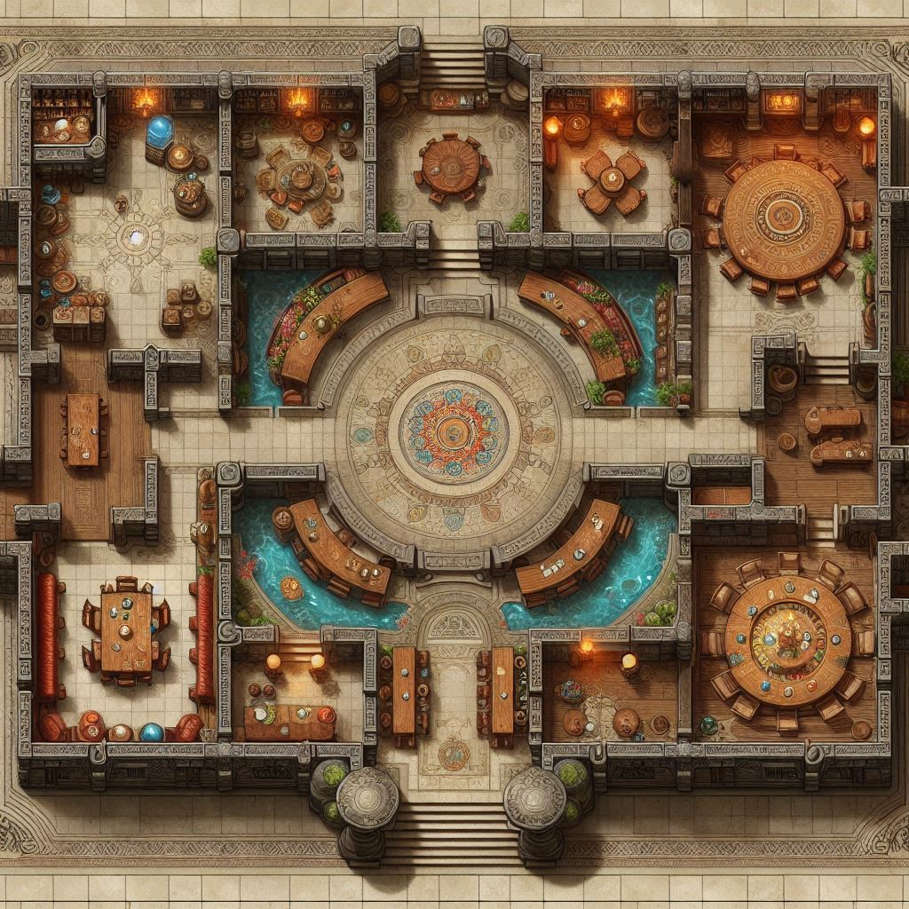

Welcome to,
Dungeon's Kitchen
Welcome to Dungeons Kitchen, a culinary oasis nestled on the 13th floor of the Great Dungeon. Here, brave adventurers can replenish their strength and savor the flavors of victory. Our menu boasts a variety of dishes, from the hearty Hippogriff Stew, packed with nutrition to fuel your quest, to the exotic Slime Smoothie, a refreshing concoction that will cool your spirit after a heated battle. Join us at our restaurant, where every meal is an adventure in itself!
Below you can find a layout of the restaurant in the 13th floor of The Great Dungeon:
Open Hours
We open almost every day of the week except sundays or when the Guild says so
- Monday:
- Tuesday:
- Wednesday:
- Thursday:
- Friday:
- Saturday:
- Sunday:
- 10:00 AM - 11:00 PM
- 10:00 AM - 11:00 PM
- 10:00 AM - 11:00 PM
- 10:00 AM - 11:00 PM
- 10:00 AM - 11:00 PM
- 10:00 AM - 11:00 PM
- No Service
Menu

Banshee Merry Tart
A flaky pastry filled with sweet banshee berries, their haunting melodies echoing in every bite. Accompanied by a scoop of vanilla ice cream.
Cost: 20 Silvers

Basilisk Cesar Salad
Crisp romaine lettuce, Parmesan cheese, and croutons tossed in a creamy basilisk egg dressing. Watch out for the stone-cold gaze!
Cost: 15 Silvers

Cockatrice Coq au Vin
Slow-cooked cockatrice thighs braised in red wine, pearl onions, and aromatic herbs. Best enjoyed with a crusty baguette.
Cost: 60 Silvers

Gelatinous Cube Slime Jellies
Colorful cubes of gelatinous dessert, each flavor representing a different dungeon level. Choose from oozeberry, ethereal lemon, or spectral grape.
Cost: 5 Silvers

Griffon Wing Kebabs
Succulent griffon wings marinated in a zesty citrus glaze, skewered and grilled to perfection. Accompanied by pickled radishes and a side of mint yogurt sauce.
Cost: 80 Silvers

Harpy Harissa
Grilled harpy drumsticks coated in a smoky harissa rub. Served with charred leeks and a side of pomegranate molasses.
Cost: 30 Silvers

Manticore Meatballs
Spiced manticore meatballs, simmered in a rich tomato and basil sauce. Served over a bed of saffron-infused rice.
Cost: 50 Silvers

Rust Monster Risotto
Arborio rice cooked with roasted red peppers, sautéed mushrooms, and slivers of rust monster antennae. A dash of lemon zest adds brightness.
Cost: 40 Silvers
Slime Podridge
A hearty porridge made from ancient grains, infused with the essence of dungeon slime. Served with a dollop of honey and a sprinkle of toasted sesame seeds.
Cost: 25 Silvers

Wyvern Fire Tacos
Corn tortillas filled with fiery wyvern-spiced shredded chicken, topped with diced dragonfruit salsa and lime crema.
Cost: 1 Gold 20 Silvers
Drinks

Basilisk Blood Elixir
A mysterious potion that grants temporary invulnerability. It tastes like licorice and has a slight numbing effect on the tongue.
Cost: 35 Silvers

Centaur Cider
Fermented from wild apples found in centaur forests, this cider has a robust, earthy flavor with a hint of clover.
Cost: 5 Silvers

Dragonfire Brew
A potent ale brewed with dragon scales, infused with hints of cinnamon and smoky oak. It warms the soul and leaves a lingering ember-like aftertaste.
Cost: 17 Silvers

Gorgon Gaze Absinthe
A green, anise-flavored spirit that induces hallucinations. Beware—it turns everything you see into stone for a brief moment.
Cost: 12 Silvers

Harpy Harbinger Tea
A delicate blend of chamomile, elderflower, and harpy feathers. It foretells the future—though the predictions are often cryptic.
Cost: 3 Silvers

Kraken Krupnik
A spiced liqueur made from kraken ink, cloves, and honey. It warms the belly and grants courage in the face of danger.
Cost: 42 Silvers

Siren Song Mead
A honeyed mead with a haunting melody. Each sip transports you to a distant shore, where sirens beckon sailors to their doom.
Cost: 13 Silvers
About
"The Dungeon's Kitchen" wasn't always a haven for adventurous gourmands. It began as a simple mess hall for weary adventurers returning from the perilous depths of the Great Dungeon. But then came Elara, a fiery gnome chef, and Bartholomew, a troll with an unexpectedly refined palate. Elara, tired of the usual dungeon fare (mostly stale bread and questionable stew), started experimenting with the exotic ingredients adventurers brought back - glowing mushrooms, plump cavefish, and even the occasional tender (and ethically sourced) monster steak. Bartholomew, initially skeptical, was soon won over by Elara's culinary creations.
Word spread through the dungeon like wildfire (or perhaps a particularly enthusiastic fireball). Soon, adventurers seeking a reward beyond gold were lining up for Elara's delectable dishes. "The Dungeon's Kitchen" expanded, carving out a niche in a massive cavern lit by bioluminescent fungi. Tables were fashioned from petrified wood, and flickering torches cast an orange glow on the adventurous clientele, orcs sipping on spiced cave slug broth, dwarven warriors tackling plates of roasted gribble (a surprisingly tasty herbivore), and elven mages debating the merits of firefly fricassee.
The menu at "The Dungeon's Kitchen" changes daily, depending on what the adventurers bring back. Elara takes pride in utilizing every part of the creature, transforming potentially monstrous ingredients into culinary delights. Bartholomew, with surprising dexterity, serves as the head waiter, navigating the cavernous space with surprising grace (and the occasional accidental fireball from a disgruntled patron).
A visit to "The Dungeon's Kitchen" is an experience unlike any other. It's a place where danger and deliciousness meet, where brave adventurers can refuel and share stories of their exploits, all while enjoying a meal that might just be the tastiest (and most terrifying) they've ever had.
Contact Us
Got a suggestion, praise of critic ?, please write us:
- Email: totally_real_email@dungeonkitchen.com